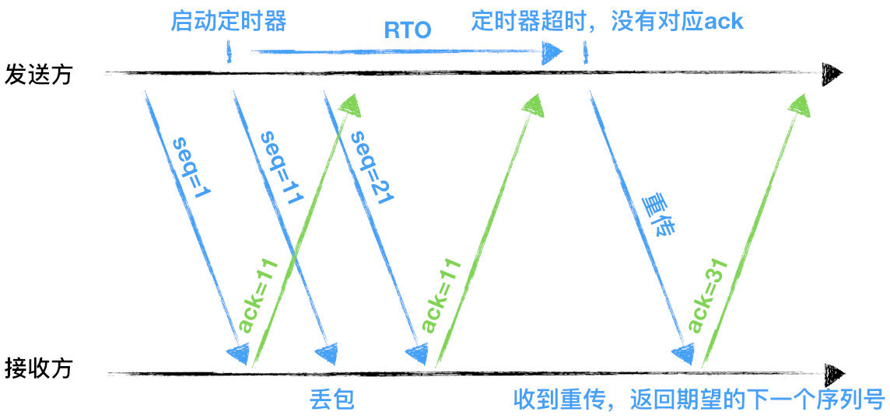
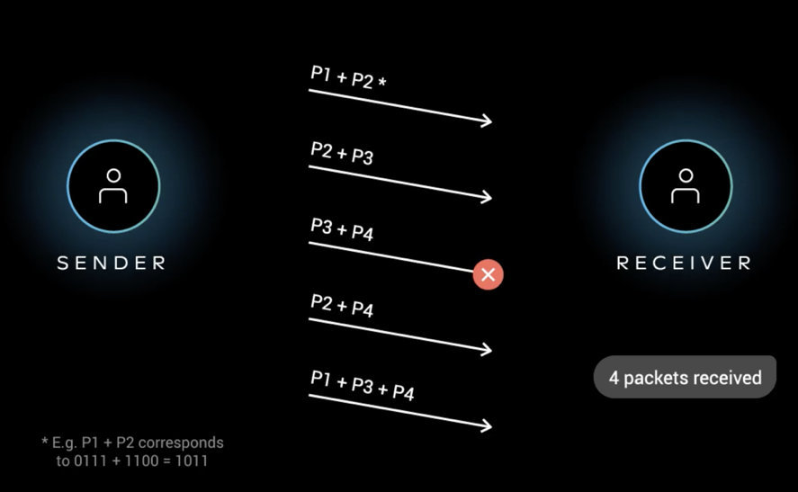
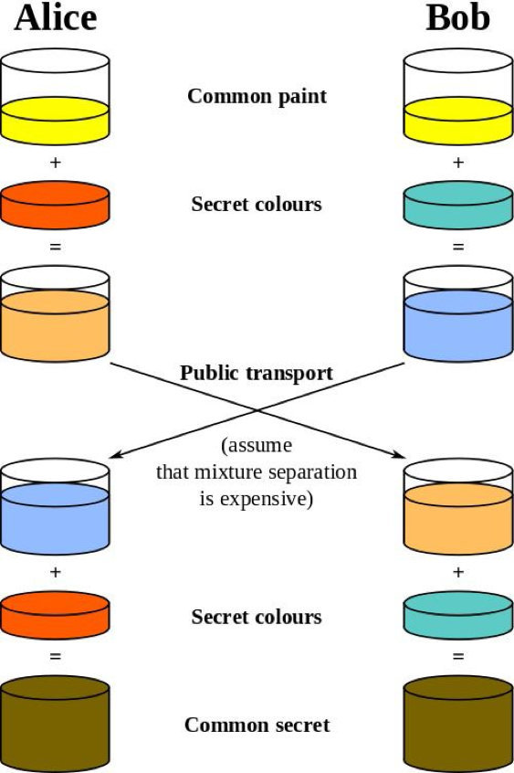

HTTP3 学习
前言
Google 在推 SPDY 的时候就已经意识到了 HTTP2 存在的问题，于是就另起炉灶搞了一个基于 UDP 协议的“QUIC”协议，让 HTTP 跑在 QUIC 上而不是 TCP 上。而这个“HTTP over QUIC”就是 HTTP 协议的下一个大版本，HTTP/3。它在 HTTP/2 的基础上又实现了质的飞跃，真正“完美”地解决了“队头阻塞”问题
内容
- HTTP/2 的缺点
- QUIC 协议特点
- HTTP/3 的挑战
一、HTTP/2 的缺点
- TCP 和 TCP+TLS 建立连接的延时
- TCP 的队头阻塞并没有彻底解决
- 多路利用导致服务器压力上升
- 多路利用容易 Timeout
1.1 TCP 和 TCP+TLS 建立连接的延时
TCP 连接需要和服务器进行三次握手，即消耗完 1.5 个 RTT 之后才能进行数据传输。
TLS 连接有两个版本——TLS1.2 和 TLS1.3，每个版本建立连接所散弹的时间不同，大致需要 1~2 个 RTT。
RTT（Round-Trip Time）:往返时延。表示从发送端发送数据开始，到发送端收到来自收端的确认（接收端收到数据后便立即发送确认），总共经历的时延。
1.2 TCP 的队头阻塞并没有彻底解决
TCP 为了保证可靠传输，有一个“超时重传”机制，丢失的包必须等待等待重传确认。HTTP2 出现丢包时，整个 TCP 都要等待重传，那么就会阻塞该 TCP 连接中的所有请求。

RTO：英文全称是 Retransmission TimeOut，即重传超时时间；RTO 是一个动态值，会根据网络的改变而改变。RTO 是根据给定连接的往返时间 RTT 计算出来的。接收方返回的 ack 是希望收到的下一组包的序列号。
1.3 多路复用导致服务器压力上升
多路复用没有限制同时请求数。请求的平均数量与往常相同，但实际会有许多请求的短暂爆发，导致瞬时 QPS 暴增。
1.4 多路复用容易 Timeout
大批量的请求同时发送，由于 HTTP2 连接内存在多个并行的流，而网络带宽和服务器资源有限，每个流的资源会被稀释，虽然它们开始时间相差更短，但却都可能超时。
即使是使用 Nginx 这样的负载均衡器，想正确进行节流也可能很棘手。其次，就算你向应用程序引入或调整排队机制，但一次能处理的连接也是有限的。如果对请求进行排队，还要注意在响应超时后丢弃请求，以避免浪费必要的资源。
二、QUIC 协议特点
- 改进的拥塞控制、可靠传输
- 快速握手
- 集成了 TLS 1.3 加密
- 多路复用
- 连接迁移
2.1 改进的拥塞控制、可靠传输
从拥塞算法和可靠传输本身来看，QUIC 只是按照 TCP 协议重新实现了一遍，那么 QUIC 协议到底改进在哪些方面呢？主要有如下几点：
- 可插拔—应用程序层面就能实现不同的拥塞控制算法
一个应用程序的不同连接也能支持配置不同的拥塞控制。应用程序不需要停机和升级就能实现拥塞控制的变更，可以针对不同业务，不同网络制式，甚至不同的 RTT，使用不同的拥塞控制算法。
关于应用层的可插拔拥塞控制模拟，可以对 socket 上的流为对象进行实验。
- 单调递增的 Packet Number—使用 Packet Number 代替了 TCP 的 seq。
每个 Packet Number 都严格递增，也就是说就算 Packet N 丢失了，重传的 Packet N 的 Packet Number 已经不是 N，而是一个比 N 大的值。而 TCP 重传策略存在二义性，比如客户端发送了一个请求，一个 RTO 后发起重传，而实际上服务器收到了第一次请求，并且响应已经在路上了，当客户端收到响应后，得出的 RTT 将会比真实 RTT 要小。当 Packet N 唯一之后，就可以计算出正确的 RTT。
- 不允许 Reneging—一个 Packet 只要被 Ack，就认为它一定被正确接收。
Reneging 的意思是，接收方有权把已经报给发送端的SACK（Selective Acknowledgment）里的数据给丢了（如接收窗口不够而丢弃乱序的包）。
QUIC 中的 ACK 包含了与 TCP 中 SACK 等价的信息，但 QUIC 不允许任何（包括被确认接受的）数据包被丢弃。这样不仅可以简化发送端与接收的实现难度，还可以减少发送端的内存压力。
- 前向纠错
早期的 QUIC 版本存在一个丢包恢复机制，但后来由于增加带宽消耗和效果一般而废弃。FEC 中 QUIC 数据帧的数据混合原始数据和冗余数据，来确保无论到达接收端的 n 次传输内容是什么，接收端都能够恢复所有 n 个原始数据包。FEC 的实质就是异或。示意图：

- 更多的 Ack 块和增加 Ack Delay 时间
QUIC 可以同时提供 256 个 Ack Block，因此在重排序时，QUIC 相对于 TCP（使用 SACK）更有弹性，这也使得在重排序或丢失出现时，QUIC 可以网络上保留更多的在途字节。在丢包率比较高的网络下，可以提升网络的恢复速度，减少重传量。
TCP 的 Timestamp 选项存在一个问题：发送方在发送报文时设置发送时间戳，接收方在确认该报文段时把时间戳字段复制到确认报文时间戳，但是没有计算接收端接收到包到发送 Ack 的时间。这个时间可以简称为 Ack Delay，会导致 RTT 计算误差。现在就是把这个东西加进去计算 RTT 了。
- 基于 stream 和 connection 级别的流量控制。
为什么需要两类流量控制呢？主要是因为 QUIC 支持多路复用。Stream 可以认为就是一条 HTTP 请求。Connection 可以类比一条 TCP 连接。多路复用意味着在一条 Connection 上会同时存在多条 Stream。
QUIC 接收者会通告每个流中最多想要接收到的数据的绝对字节偏移。随着数据在特定流中的发送，接收和传送，接收者发磅 WINDOW_UPDATE 帧，该帧增加该流的通告偏移量，允许对端在该流上发送更多的数据。
除了每个流的流控制外，QUIC 还实现连接级的流控制，以限制 QUIC 接收者愿意为连接分配的总缓冲区。连接的流控制工作方式与流的流控制一样，但传送的字节和最大的接收依稀是所有流的总和。
最重要的是，我们可以在内存不足或者上游处理性能出现问题时，通过流量控制来限制传输速率，保障服务可用性。
2.2 快速握手功能
由于 QUIC 是基于 UDP 的，所以 QUIC 可以实现 0-RTT 或者 1-RTT 来建立连接，可以大大提升首次打开页面的速度。
2.3 集成了 TLS 1.3 加密
TLS 1.3 支持 3 种基本密钥交换模式：
(EC)DHE（基于有限域或椭圆曲线的Diffie-Hellman）
PSK - only
PSK with (EC)DHE
2
3
在完全握手情况下，需要 1-RTT 建立连接。TLS1.3 恢复会话可以直接发送加密后的应用数据，不需要额外的 TLS 扬，也就是 0-RTT。
TLS 1.3 0-RTT 简单原理示意（基于 DHE）：

但是 TLS1.3 也并不完美。TLS1.3 的 0-RTT 无法保证前向安全性。简单讲就是，如果当攻击者通过某种手段取到了 Session Ticket Key，那么该攻击者可以解密以前的加密数据。
要缓解该问题可以通过设置使得与 Session Ticket Key 相关的 DH 静态参数在短时间内过期（一般几个小时）。
2.4 多路复用，彻底解决 TCP 中队头阻塞的问题
QUIC 是为多复用从头设计的，携带个别流的数据的包丢失时，通常只影响该流。QUIC 连接上的多个 stream 之间没有依赖，也不会有底层协议限制。假如 stream2 丢了一个包，也只会影响 stream2 的处理。
2.5 连接迁移
TCP 是按照 4 要素（客户端 IP、端口，服务器 IP、端口）确定一个连接的。而 QUIC 则是让客户端生成一个 Connection ID(64 位)来区别不同连接。只要 Connection ID 不变，连接就不需要重新建立，即便是客户端的网络发生变化。由于迁移客户端继续使用相同的会话密钥来加密和解密数据包，QUIC 还提供了迁移客户端的自动加密验证。
三、HTTP/3 的挑战
- 从目前的情况来看，服务器和浏览器都没有对 HTTP/3 提供比较完整的支持。Chrome 虽然在数年前就开始支持 Google 版本的 QUIC，但是这个版本的 QUIC 和官方的 QUIC 存在着非常大的差异。
- 部署 HTTP/3 也存在着非常大的问题。因为系统内核对 UDP 的优化远远没有达到 TCP 的优化程序，这也是阻碍 QUIC 的一个重要原因。
- 中间设备僵化的问题。这些设备对 UDP 的优化程度远远低于 TCP，据统计使用 QUIC 协议时，大约有 3%~7%的的丢包率。
参考资料
联系作者
平凡世界，贵在坚持。